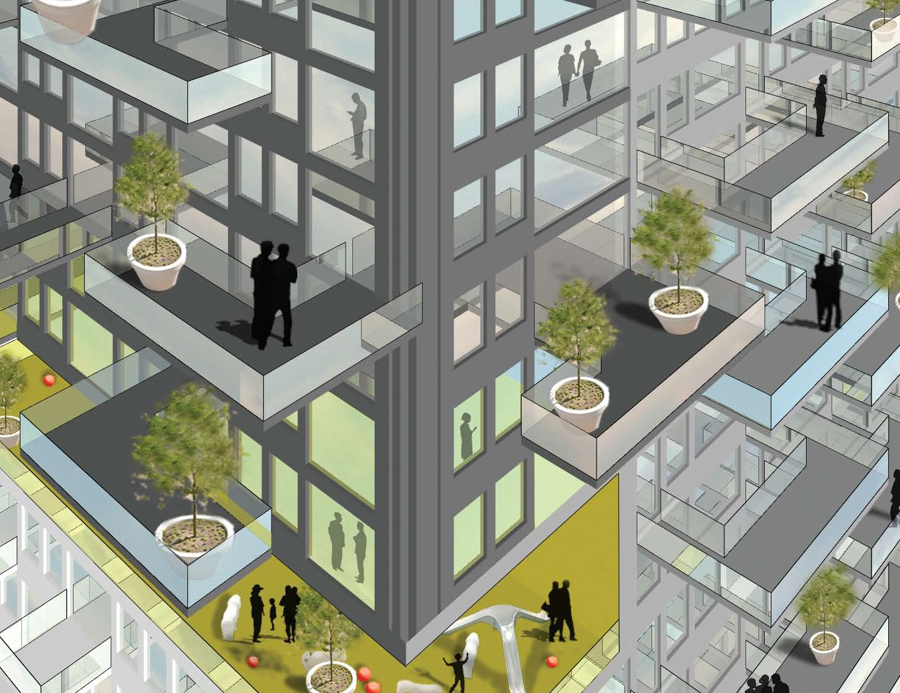
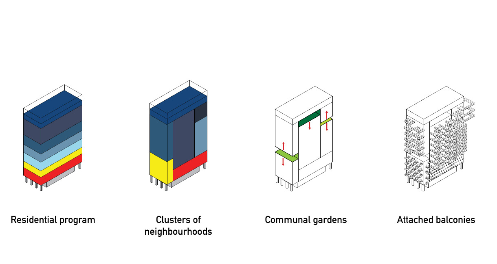
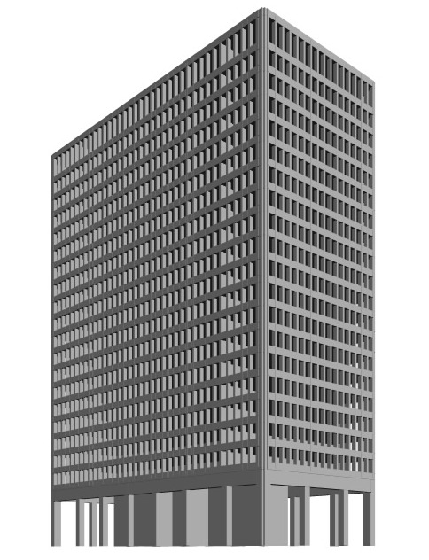
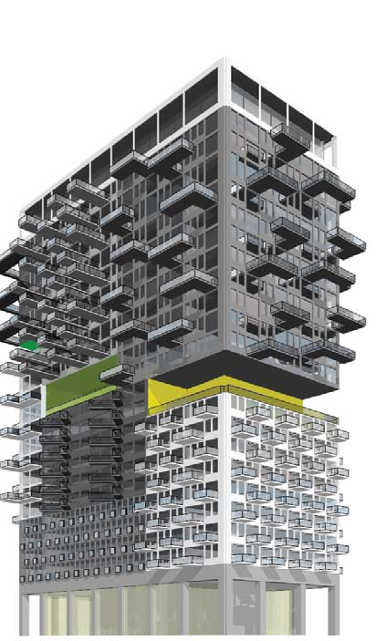
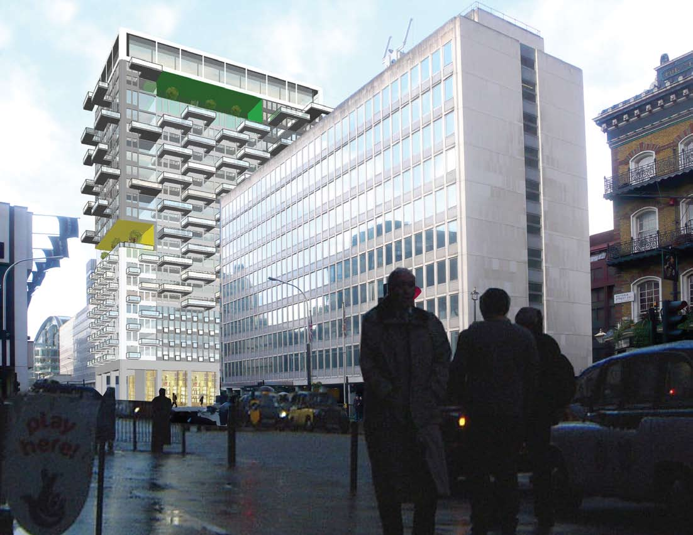
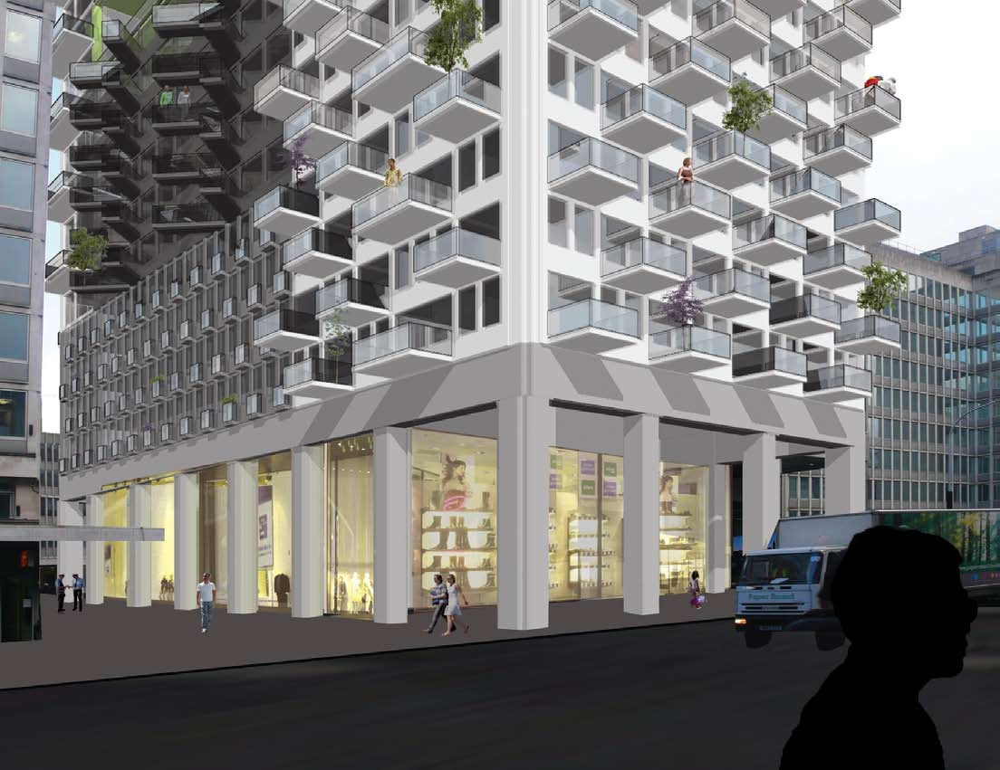

Brilliant Balconies was an invited competition proposal to transform the 22-story former Westminster City Hall office tower on Victoria Street into approximately 20,000 square meters of residential space. The proposal treated conversion as a process of domesticization: opening the fixed office facade, adding generous outdoor rooms, and making different apartment types legible through distinct balcony forms.
Apartment types were clustered into vertical neighborhoods shaped by sun, views, noise, access, and shared gardens. The resulting facade preserved the order of the existing structure while giving residents differentiated identities and exterior space. The proposal was not selected but was commended for its distinctive vision.
Jeremy worked as part of a four-person MVRDV team and was responsible for concept design and development, renderings, diagrams, and schematic unit layouts.





